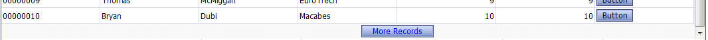

Grid Navigation - New Option - 'Fetch More Records' Button
To support a common design pattern used in mobile applications (e.g Gmail on the iPad or iPhone), the Grid now has a new option for pagination. In addition to the standard pagination option (buttons for First, Previous, Next and Last Page), you can now display a button after the last Grid row that will do an Ajax callback and fetch another page of records. (Hover over the image to see it full size.)